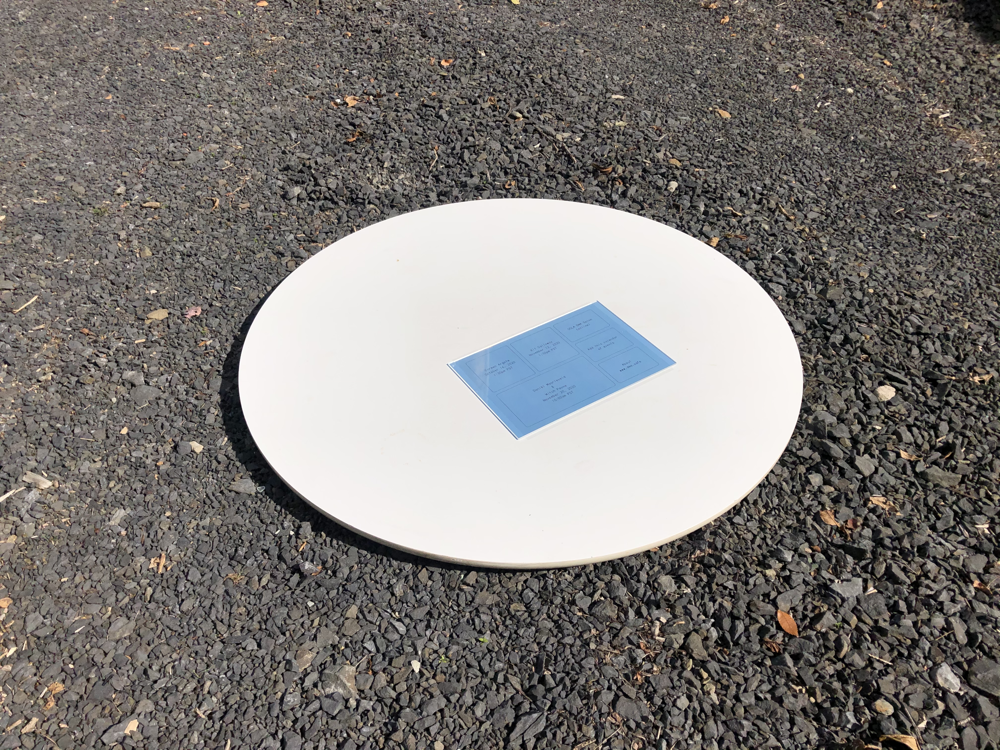
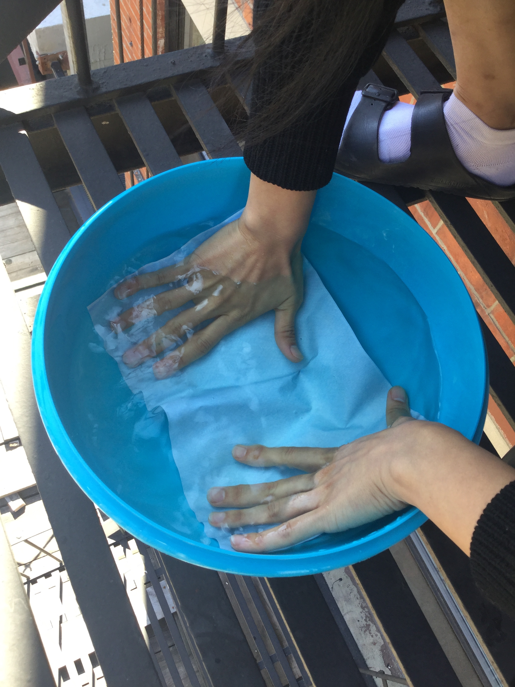

Welcome to our slow technology café, www.dma.cafe.
Each page of this website is printed by hand in the sun.
For each event of the 2021–21 UCLA Digital Media Arts Salon lecture
series, we created a
cyanotype
(sun print), which prints differently depending on the time of day,
year, and longitudinal coordinate. As new events are added to the Salon
series, new cyanotypes will be created over the course of the
seasons.
This website is designed and developed by us,
CSS (Laura
Coombs, Laurel Schwulst, Mindy Seu), and the typeface is Waxwing by
Michelle Lin (UCLA
DMA '13). The website music was created by
Richard Caceres (UCLA
DMA '12).